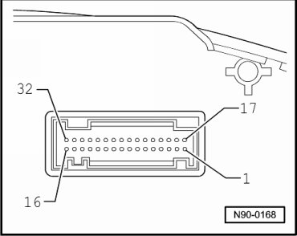
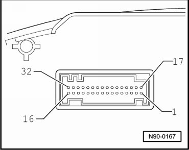

Instrument Cluster Connector Assignments, through 11.06
Instrument Cluster Connector Assignments, through 11.06
• Multi-pin connector assignments depend on market, vehicle equipment and engine versions.
--> [ Blue 32-Pin Connector, through 11.06 ]
--> [ Green 32-Pin Connector, through 11.06 ]
Blue 32-Pin Connector, through 11.06

1 Terminal 15, positive
2 Terminal 15, positive
3 Output signal 1 from electronic speedometer
4 Tank sensor 2
5 Tank sensor 1
6 Low washer fluid level
7 Terminal 31, sensor ground
8 Terminal 30
9 Terminal 31, ground
10 Oil pressure switch
11 Ambient temperature
12 Warning lamp for generator, terminal 61
13 not used
14 not used
15 not used
16 not used
17 not used
18 Terminal 30 S
19 Terminal 30 S
20 not used
21 not used
22 Low coolant indicator
23 Terminal 30, positive
24 Terminal 31, ground
25 On-board diagnostics/K-line
26 not used
27 not used
28 not used
29 Warning contact for brakes, general
30 not used
31 Seat belt warning lamp
32 not used
Green 32-Pin Connector, through 11.06

1 not used
2 not used
3 not used
4 not used
5 not used
6 not used
7 Brake lining wear
8 CAN- out, high
9 CAN- out, low
10 not used
11 not used
12 not used
13 Parking brake
14 not used
15 not used
16 not used
17 not used
18 Signal for oil temperature and oil level warning
19 Powertrain CAN-Bus, High
20 Powertrain CAN-Bus, Low
21 not used
22 not used
23 not used
24 not used
25 not used
26 not used
27 CAN-comfort, high
28 CAN-comfort, low
29 not used
30 Emergency operation
31 CAN-infotainment High
32 CAN-infotainment Low